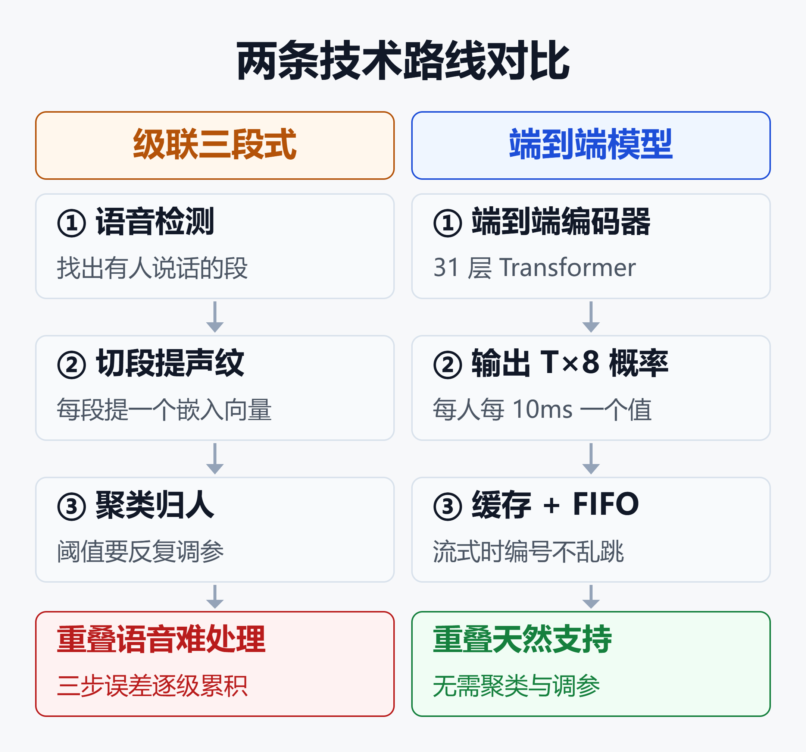
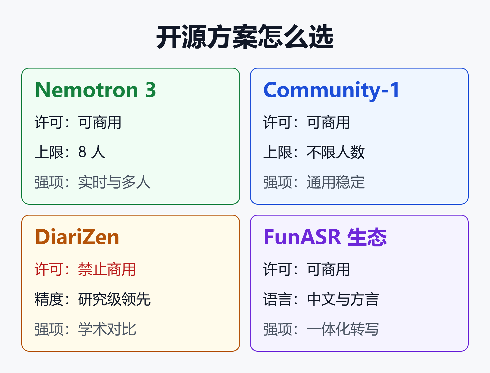

英伟达免费语音分割模型登顶 VoiceArena：2026 开源说话人分离全景与选型
14.72% - 这是英伟达新模型 Nemotron 3 Diarization 在 VoiceArena 说话人分离榜上的错误率，第二名是 19.3%，相对差距约 24%。
更关键的是另外两个数字：它只有约 1 亿参数，权重免费开放、允许商用。按 Baseten 的实测，一张 RTX PRO 6000 能同时跑 500 多路小时级音频流，折合每音频小时约 1 美分。
说话人分离（Speaker Diarization）一直是语音链路里最不起眼、却最容易拖后腿的一环。正好借 Nemotron 3 登顶这个契机，把 2026 年的开源分离方案摆在一起看一遍：技术路线变了什么，榜单数字该怎么读，你的团队该怎么选。
一、说话人分离是什么，为什么它总在拖后腿
「谁在什么时候说话」
语音识别（ASR）解决「说了什么」，说话人分离解决「谁在什么时候说」。它输出的是一组时间段和说话人编号，比如 0.4s–2.1s speaker_0，不输出文字。
两者合起来，才是一份能用的会议纪要：谁做了承诺、谁提了反对、谁打断了谁。没有分离，一场六个人的会议转写出来就是一整块没有主语的文字。
错误会层层放大
pyannote 团队举过一个例子：客服质检里只要一个说话人标错，情绪分可能直接反转，合规检查也会跟着失效，而且这种错误会在成千上万小时的录音里被复制。
到了大模型时代，这个问题更突出。会议摘要、行动项抽取、语音 Agent 的记忆，全都假设「这句话是谁说的」是对的。分离错了，下游的 LLM 再聪明也是在错误的前提上推理。
衡量指标：DER
行业主流指标是 DER（分离错误率），由三部分相加：
- 漏检：有人在说话，系统没检测到
- 误报：没人说话，系统却标了说话人
- 混淆：时间对了，但人标错了
DER 越低越好。但它对评测口径极其敏感——同一个模型换个测法，分数能差好几个点，第三节专门拆这件事。
二、Nemotron 3 Diarization：一个 1 亿参数的小模型做对了什么
基本信息
英伟达在 2026 年 9 月 23 日发布了这个模型，权重托管在 Hugging Face，许可证是 OpenMDW-1.1，官方模型卡写明可用于商业和非商业用途。
| 项目 | 参数 |
|---|---|
| 参数量 | 约 1 亿 |
| 最多说话人 | 8 人 |
| 输入 | 16kHz 单声道 |
| 输出粒度 | 每 10ms 一帧 |
| 延迟档位 | 0.32s 到 30.4s |
| 许可证 | OpenMDW-1.1 可商用 |
有中文和英文媒体把它写成「10 亿参数」，这是误传。模型卡给出的数字是 1.0×10⁸，也就是 1 亿。
架构：一个网络直接输出「每人每帧」的概率
模型把音频转成 10ms 一帧的梅尔频谱，每 8 帧合并一次，送进一个 31 层、带旋转位置编码（RoPE）的 Transformer 编码器，最后用一层卷积把结果还原到 10ms 粒度。
输出是一个 T×8 的矩阵：T 个时间帧，8 个说话人通道，每个值是「这个人此刻在说话」的概率。两个人同时说话，就是两个通道同时亮起，重叠语音天然就被处理了。
到达顺序排序：让编号不乱跳
它沿用了英伟达 Sortformer 的思路：按说话人第一次出现的先后给通道编号。第一个开口的永远是 speaker_0，第二个新声音是 speaker_1。
流式场景里，模型每次只能看到一小段新音频。靠两块「记忆」保持编号稳定：一个按到达顺序组织的说话人缓存（AOSC），存着早先出现过的人；一个先进先出队列（FIFO），存着最近几秒的上下文。

这张图对比了两条技术路线。传统方案要先做语音检测、再切段提声纹、最后聚类，三步各有参数要调，重叠语音很难处理。Nemotron 3 这类端到端模型一次前向就输出每个人每一帧的活动概率，靠说话人缓存和 FIFO 队列支持流式，不再需要聚类。
一个 checkpoint，四档延迟
同一份权重支持四种推荐延迟配置，按需切换，不用重新部署。在 DIHARD III 全集上，四档的错误率如下：
| 档位 | 输入缓冲 | DER |
|---|---|---|
| 离线 | 30.4 秒 | 12.73% |
| 低延迟 | 1.04 秒 | 13.18% |
| 很低延迟 | 0.64 秒 | 13.28% |
| 超低延迟 | 0.32 秒 | 13.55% |
从离线档切到 0.32 秒的超低延迟档，错误率只高了不到 1 个点。这意味着实时字幕、语音 Agent 这类场景，基本不用在精度上做妥协。
要说明的是，这里的延迟只指输入缓冲，不含计算、网络和 ASR 的耗时。模型技术上能跑 80ms 缓冲，但官方最低推荐 0.32 秒。
三、榜单成绩怎么读
VoiceArena：12 个系统里排第一
VoiceArena 的 Diarization-Bench 初版评测了 12 个系统、17 种配置，用的是 139 段英文真实对话，共约 22 小时。评测口径比较严：重叠语音计分、系统自己检测语音、边界不留容差。
在这个口径下，Nemotron 3 的 DER 是 14.72%，第二名 19.3%。放宽到 100ms 和 250ms 容差，它依然排第一。按场景拆开，线下面对面录音 15.24%，线上会议（VoIP）11.65%。
对比上一代：多人场景提升最大
以离线档为准，和上一代 4 人版 Streaming Sortformer v2.1 相比：
| 评测集 | 上一代 | Nemotron 3 |
|---|---|---|
| DIHARD III | 19.09% | 12.73% |
| CALLHOME | 10.32% | 9.10% |
| AliMeeting 近场 | 11.57% | 6.40% |
| AliMeeting 远场 | 13.69% | 10.47% |
在 1.04 秒延迟下，8 个评测条件的相对降幅平均约 41%，从 CALLHOME 的 9% 到 NOTSOFAR1 的 65% 不等。说话人越多，优势越明显，这和它从 4 人扩到 8 人直接相关。
对中文团队来说，AliMeeting 是个值得看的信号：这是阿里开源的中文会议数据集，近场 DER 从 11.57% 降到 6.40%。
第三方复测
端侧语音公司 Argmax 用自家 OpenBench 在 11 个数据集上测了 6 个分离系统，Nemotron 3 的整体 DER 最低，11 个数据集里有 5 个拿第一。上一代 Sortformer v2.1 的错误率比它高约 60%。
Baseten 的测试则指出一个例外：在 AMI 会议集上，它输给了 pyannote 的开源模型 Community-1。
要打折看的三件事
第一，VoiceArena 标注的是「初版结果」，官方说完成 V1 评测和统计检验后可能变动，而且只测了英文。
第二，英伟达自己的评测在 AMI、AliMeeting 等数据集上用的是强制对齐生成的标注，不是原始标注。官方解释原始标注会把句内停顿算成说话，但这也意味着它的数字不能和别家论文直接比。
第三，并非全面领先。在 CALLHOME 的两人子集上，新模型 5.98% 反而略差于上一代的 5.68%。两人电话录音恰恰是客服质检的主力场景。
四、2026 年开源说话人分离全景
pyannote：生态最成熟的老牌
pyannote.audio 是这个领域用得最广的开源工具，最新一代叫 Community-1（pyannote.audio 4.0）。代码 MIT 协议，权重 CC-BY-4.0，可以商用。
它走的是「分割 + 声纹 + 聚类」路线：用幂集分割模型处理重叠，WeSpeaker 提取声纹，VBx 聚类。最大的优点是不限说话人数，也不挑语言。
官方公布的 Community-1 成绩：AMI 单麦 19.9%，DIHARD III 全集 20.2%，口径同样是全自动、无容差、计入重叠。背后的 pyannoteAI 公司靠商业版 Precision 系列和流式模型 Live-1 收费。
DiariZen：精度最强的开源方案之一，但不能商用
DiariZen 来自捷克布尔诺理工（BUT），在 pyannote 框架上换用了 WavLM 自监督模型，再做结构化剪枝。
它的成绩很亮眼：DIHARD III 14.5%，AliMeeting 远场 10.8%，AISHELL-4 约 10%。2025 年一篇第三方基准论文评测了 5 个主流系统，DiariZen 以 13.3% 的 DER 成为最强开源方案，仅次于商业版 pyannoteAI 的 11.2%。
但它的权重是 CC BY-NC 4.0，禁止商用。原因是训练数据里有几个数据集本身就限制商用。做研究和内部评测没问题，放进产品就不行。
3D-Speaker 与 FunASR：中文生态的主力
阿里通义实验室的 3D-Speaker 是一套声纹识别和分离工具包，提供 CAM++、ERes2Net 等声纹模型，还支持结合视频画面做音视频联合分离。
FunASR 则把语音检测、识别、标点和 CAM++ 声纹串成一条管线，一次调用就能拿到「说话人 + 时间戳 + 文字」。对中文、方言场景，它是国内团队最省事的起点。
这两者的分离环节本质上仍是声纹加聚类，胜在和中文 ASR 深度打通、在国内网络环境下好下载好部署。
其他选项
- NeMo 旧方案：级联的 MSDD，以及只支持 4 人的 Sortformer v2.1，新项目可以直接跳过
- SpeechBrain：ECAPA-TDNN 声纹模型很经典，适合研究和声纹验证
- Kaldi：x-vector 的发源地，维护老系统可以用，新项目不建议
一张表看精度与许可
下面这张表是各方在 DIHARD III 全集上自己公布的数字。口径不完全一致，只适合看量级，不适合精确排名：
| 方案 | DER | 权重许可 |
|---|---|---|
| Nemotron 3 | 12.73% | OpenMDW 可商用 |
| DiariZen v2 | 14.5% | CC BY-NC 禁商用 |
| Community-1 | 20.2% | CC-BY-4.0 |
| pyannote 3.1 | 21.7% | MIT |
五、商业 API 还有没有优势
AssemblyAI、Deepgram、Speechmatics 这些转写服务都带分离功能，但分离只是 ASR 的附属能力，很难单独调优。
pyannoteAI 公布的流式基准里，Speechmatics 实时版 DER 为 31.3%，Deepgram Nova 3 为 39.1%，AssemblyAI 流式 v3 为 39.2%，自家 Live-1 为 19.8%。这份数据来自竞争方，要谨慎看待，但方向和其他第三方评测一致。
Nemotron 3 这次的意义在于：一个免费、可商用、能流式的开源模型，把精度拉到了和专业商业服务同一档。对话术分析、会议纪要这类需要大批量处理的业务，自建的成本优势会越来越明显。
六、分离之外：语音 Agent 的新信号
Baseten 提到一个容易被忽视的用法：Nemotron 3 每 10ms 输出一次逐人活动概率，这个信号本身就能直接喂给语音 Agent。
- 语音检测：把 8 个通道合起来看，直接判断有没有人在说话，比音量阈值更可靠
- 按人判断说完：只盯主用户的通道，旁边有人聊天不会误触发 Agent 回复
- 打断与抢话：第二个通道亮起就是有人插话，两个同时亮就是重叠，超低延迟档约 300ms 就能响应
Baseten 还把它和英伟达 6 亿参数的 Parakeet V2 英文 ASR 接在一起：把逐人活动向量直接送进 ASR 编码器，一次前向就能转写重叠的两路语音。这种「分离引导识别」的做法，可能是多人语音转写的下一个方向。
七、上手：几行代码跑起来
官方推荐在 Linux + NVIDIA GPU（Ampere 及以上）上用 NeMo 运行。先安装依赖：
apt-get install -y libsndfile1 ffmpeg
pip install Cython packaging
pip install "nemo-toolkit[asr]"
离线档推理示例（参数单位是 80ms 帧）：
from nemo.collections.asr.models import (
SortformerEncLabelModel,
)
model = SortformerEncLabelModel.from_pretrained(
"nvidia/Nemotron-3-Diarization"
)
model.eval()
m = model.sortformer_modules
m.spkcache_len = 264
m.fifo_len = 40
m.chunk_len = 340
m.chunk_right_context = 40
m.spkcache_update_period = 300
model._check_streaming_parameters()
segs = model.diarize(audio=["meeting.wav"], batch_size=1)
for s in segs[0]:
print(s) # 起始秒 结束秒 speaker_x
几个实用提示：
- 音频必须是 16kHz 单声道，先用 ffmpeg 转好
- 要切到 0.32 秒超低延迟，把 fifo_len 改成 264、chunk_len 改成 3、right_context 改成 1、update_period 改成 222
- 不想装 NeMo，模型已支持 Hugging Face Transformers，也有 C++ 运行时 NeMo-Speech.cpp 和社区 GGUF 版本
- 输出的只是
speaker_0这样的匿名编号，想对应到真人姓名，得自己接声纹库或会议名单来匹配
八、怎么选：按场景和许可证

这张图把四类主流方案按「能否商用」和「擅长场景」归位：Nemotron 3 适合可商用的实时和多人场景，但人数上限是 8；pyannote Community-1 适合人数不定、语言不限的通用场景；DiariZen 精度高但只能做研究；3D-Speaker 和 FunASR 适合中文一体化转写。
| 场景 | 首选 | 备选 |
|---|---|---|
| 语音 Agent 实时交互 | Nemotron 3 | pyannote Live-1 |
| 会议纪要 8 人以内 | Nemotron 3 | Community-1 |
| 大会或人数不定 | Community-1 | Nemotron 3 |
| 中文客服质检 | FunASR | Nemotron 3 |
| 学术研究与对比 | DiariZen | Community-1 |
| 无 NVIDIA GPU | Community-1 | 3D-Speaker |
几条实用建议：
- 先看许可证，再看精度。DiariZen 精度再好，商用产品也用不了
- 先看人数上限。超过 8 人的场景，Nemotron 3 会明显掉点，老老实实用不限人数的聚类方案
- 用自己的数据测。公开榜单大多是英文，中文电话、方言、远场会议必须拿业务录音复测，至少把 Nemotron 3 和 FunASR 放在一起比
- 别只看 DER。最终用户感受到的是「转写里每个字归属对不对」，要把分离和 ASR 串起来一起评
小结
Nemotron 3 Diarization 值得关注，不只因为它登顶了一个新榜单。它说明端到端路线已经成熟：一个 1 亿参数的模型，同时覆盖离线和流式、处理重叠、支持 8 人，还免费商用。
但开源说话人分离没有「一个模型通吃」。pyannote 在人数不定的场景仍然更稳，DiariZen 在研究侧依旧强势，中文业务离不开 FunASR 和 3D-Speaker 的生态。
对大多数团队，最务实的做法是：用 Nemotron 3 做可商用的默认选项，用 Community-1 兜底人数不定的场景，再拿自己的业务录音做一次对比测试。
免责声明
本文数据来自各厂商官方发布、模型卡、第三方评测和公开论文，不同来源的评测口径（标注方式、容差、是否计入重叠语音）存在差异，数字仅供参考，不构成采购或技术决策建议。实际效果请以自有数据测试为准。
参考来源
- Hugging Face 博客 —— Know Who Spoke When: Build Real-Time, Multi-Speaker AI with NVIDIA Nemotron 3 Diarization
- Hugging Face —— nvidia/Nemotron-3-Diarization 模型卡
- Baseten 博客 —— NVIDIA Nemotron 3 Diarization: real-time speaker labels at a cent per audio hour
- MarkTechPost —— NVIDIA Releases Nemotron 3 Diarization
- The Decoder —— Nvidia drops a free 100M-parameter model that identifies up to eight speakers
- Hugging Face —— Bonenk/Nemotron-3-Diarization-GGUF 模型卡
- pyannoteAI 博客 —— Top 7 Speaker Diarization APIs and Models in 2026
- pyannoteAI 博客 —— Live-1 WebSocket 流式分离快速上手
- pyannoteAI 博客 —— Build vs. Buy: The Real Cost of Self-Hosting Diarization
- GitHub —— BUTSpeechFIT/DiariZen 说话人分离工具包
- arXiv —— Benchmarking Diarization Models（2509.26177）
- GitHub —— modelscope/3D-Speaker 说话人识别与分离工具包
- FunASR 博客 —— Speaker Diarization with FunASR: Who Spoke When, in One Call
相关阅读
- 2026 商用 ASR 语音识别全景选型：国内外 13 款产品横评，中文/英文/方言/小语种全覆盖
- 像打电话一样聊AI：全双工语音模型开源/闭源终极横评，谁更值得押注？
- 自建语音 Agent 实战指南：HuggingFace speech-to-speech 从部署到中文适配
- 智能客服Agent全景2026：国内外厂商盘点、大模型应用场景与成效避坑指南
- 大模型推理框架选型2026：vLLM、SGLang、TensorRT-LLM、Ollama、Xinference五大框架怎么选
推荐搭配装备
善其事，利其器。以下硬件能最大化你的AI体验👇
🔗 通过以上链接购买可支持本站持续运营 🙏